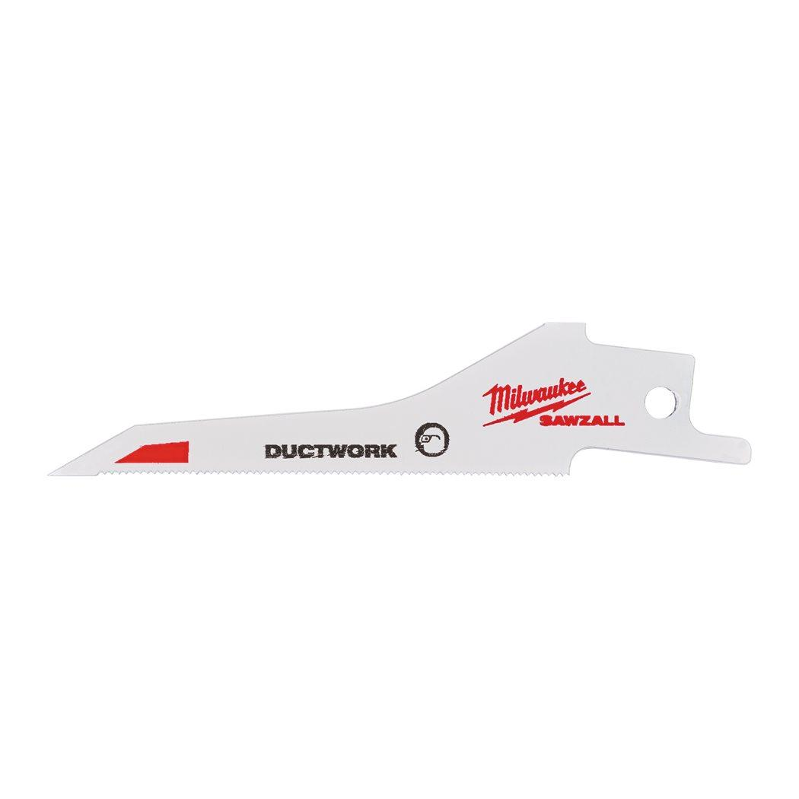

<div style="display:flex;flex-wrap:wrap;gap:8px"></div><h2>Features</h2><div><ul><li>Plunge tip - fast plunging in materials &lt; 0.6 mm. No need for extra tools.</li><li>Versatility - tapered blade body profile allows for tight radius cutting and square cuts.</li><li>Longlife - optimized tooth geometry 30 tpi for cutting thin material 0.6 - 1.5 mm. Most common spiral duct is 0.8 mm thick.</li></ul></div><div><div><h2>Information</h2><table><tr><td>Blade length (mm)</td><td>85</td></tr><tr><td>Max. cutting capacity metal pipe ⌀ (mm)</td><td>0.6 - 1.5</td></tr><tr><td>Max. cutting capacity steel (mm)</td><td>0.6 - 1.5</td></tr><tr><td>Pack quantity</td><td>5</td></tr><tr><td>Article Number</td><td>48471630</td></tr><tr><td>EAN</td><td>045242368037</td></tr></table></div></div>